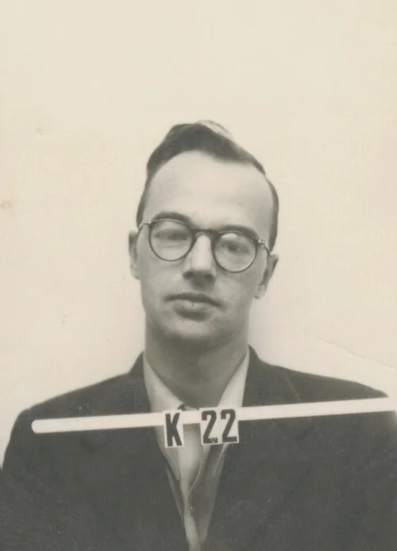
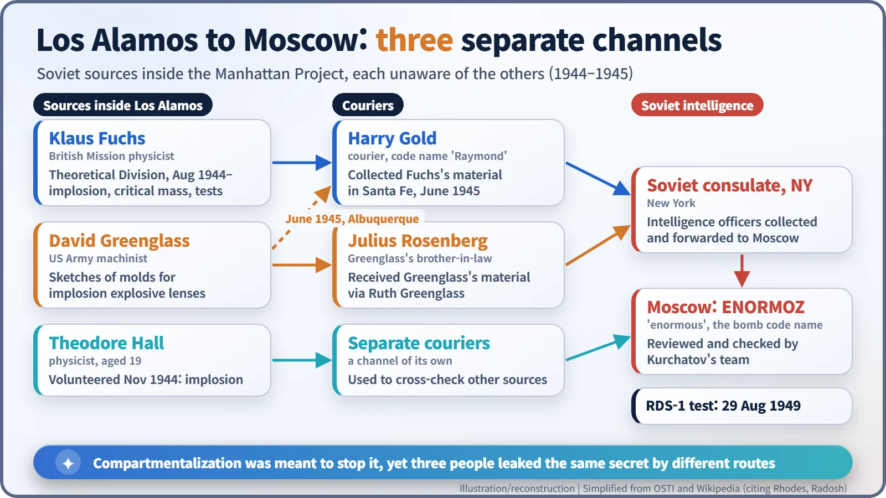
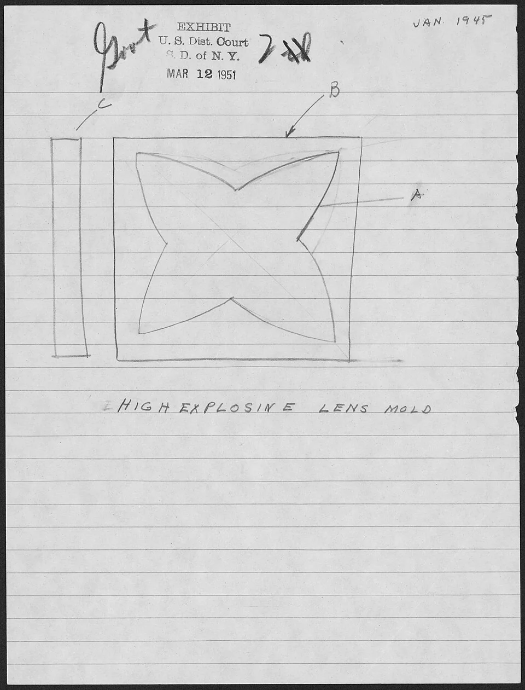
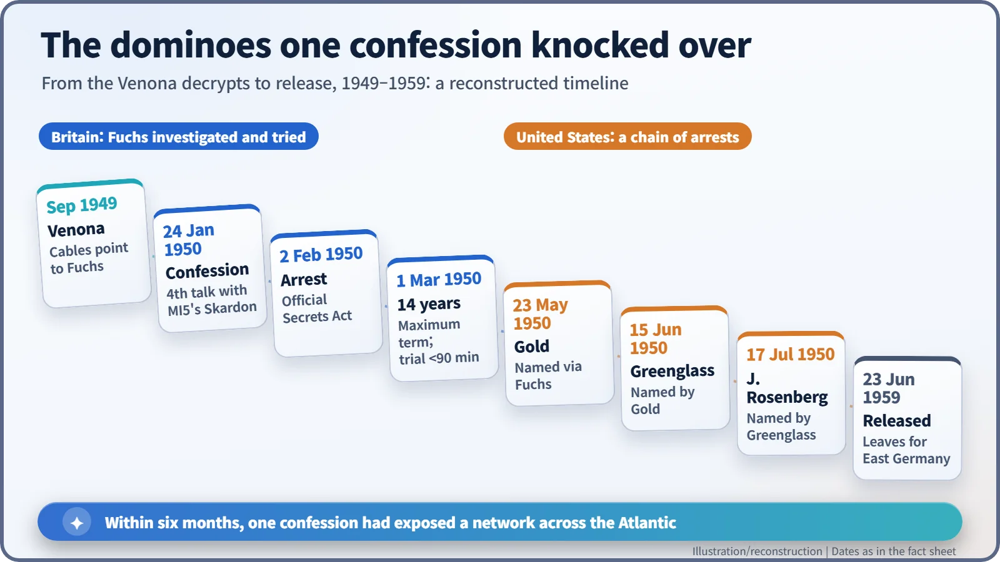

Nuclear History · 112
Badge K 22 Had Two Faces — Klaus Fuchs, the Guest Inside Los Alamos, and Atomic Espionage
A quiet theorist on the implosion team was also a Soviet source, and his confession in 1950 unravelled a spy network on both sides of the Atlantic.
Klaus Fuchs, a German-born British physicist, worked on implosion calculations at Los Alamos from August 1944 while passing atomic secrets to Soviet intelligence. Two other sources, David Greenglass and Theodore Hall, leaked by separate routes. Decrypted Soviet cables exposed Fuchs in 1949; his confession in January 1950 set off a chain of arrests on both sides of the Atlantic.
One badge, two identities
A man in his early thirties, round horn-rimmed glasses, looks expressionlessly into the camera. A number board across his chest reads "K 22". It is a Los Alamos security badge photo, and its owner is the German-born British physicist Klaus Fuchs (1911–1988). At the very time this picture was taken, the same man carried another identity: he was a source for Soviet intelligence.

One badge, two identities
A refugee communist with a gift for theory
Fuchs was born on 29 December 1911 in Rüsselsheim, Germany. As a student he joined the German Communist Party, and after the Reichstag fire of 1933 set off the persecution of communists, he went into hiding and then reached England in September of that year. He earned his doctorate at Bristol under Nevill Mott and quickly made a name as a gifted theorist.
In 1940, as a German national, he was interned and shipped to a camp in Canada, but by May 1941 Rudolf Peierls had brought him into Tube Alloys, Britain's atomic bomb project. Late in 1941 Fuchs approached Soviet intelligence on his own initiative. Moscow was by then tracking the Anglo-American bomb effort under the code name ENORMOZ, "enormous". [5] [1]
A crack in the compartments
The Manhattan Project ran on compartmentalization: people knew only what their own job required. Yet the United States left the vetting of the British Mission scientists to British security. Fuchs worked on gaseous diffusion in New York from late 1943, and in August 1944 he was posted to the Theoretical Division at Los Alamos, headed by Hans Bethe. His speciality was the most sensitive problem of all: implosion, the calculation of how high explosives could squeeze a plutonium core from every side at once. He was good at it: he helped develop methods for estimating the energy released as a core races past criticality, now known as the Fuchs–Nordheim method, and his report on blast waves is still regarded as a classic.
His courier since the New York days was Harry Gold (1910–1972), a Philadelphia chemist. In early June 1945, Fuchs met Gold near a bridge in Santa Fe and, according to the Atomic Heritage Foundation, handed over material on the implosion bomb that became "Fat Man". A story often told says Fuchs carried a tennis ball so that Gold could recognise him; we could not confirm it in a primary record, so treat it as an anecdote. On 16 July Fuchs was at the Trinity test site to watch the first atomic explosion. [5] [2] [3]
Three channels that did not know about each other
Fuchs was not alone. David Greenglass, an Army machinist, worked on molds for the implosion bomb's explosive lenses and sketched what he saw for his brother-in-law, Julius Rosenberg, passing it via his wife Ruth. In June 1945 Gold also collected material from Greenglass in Albuquerque. And Theodore Hall, a physicist just 19 years old, volunteered to the Soviets in November 1944 and sent implosion data through a channel of his own. Hall's identity became public only in the mid-1990s. [1]

Three channels that did not know about each other

Three channels that did not know about each other
Decrypted cables and falling dominoes
After Fuchs returned to Britain in 1946 to head theoretical physics at the Harwell research establishment, the leaks continued. What caught him was Venona, the American and British effort to decrypt wartime Soviet cables after the fact. In September 1949 it produced information pointing at Fuchs. After several meetings with the MI5 interrogator William Skardon, he confessed on 24 January 1950 and was arrested on 2 February.
His trial on 1 March 1950 took less than 90 minutes. The charge was not treason but breaches of the Official Secrets Act, because the Soviet Union had been an ally at the time; the sentence, 14 years, was the maximum for that offence. His statements led the FBI to Gold (arrested 23 May), Gold led to Greenglass (15 June), and Greenglass to Julius Rosenberg (17 July). Fuchs's later interview with Michael Perrin of the Ministry of Supply listed what he had passed: implosion data, gaseous diffusion details, critical masses, plutonium metallurgy, the test plans as they stood in June 1945 and estimates of production rates. The affair also had a diplomatic cost. As the historians Richard Hewlett and Francis Duncan observed, it ended any near-term hope of reviving full atomic partnership with Britain and Canada; that relationship was not repaired until the mid-1950s. [5] [6] [4]

Decrypted cables and falling dominoes
How much time did it save?
On 29 August 1949 the Soviet Union tested its first atomic bomb, RDS-1. The U.S. Department of Energy's history (OSTI) says the device was "virtually identical in design" to the Trinity device and that espionage "probably hastened by at least 12-18 months" the Soviet acquisition of the bomb. Fuchs himself, interviewed after his arrest, put it at "one year at least".
Those figures remain estimates. Soviet leaders tended to use intelligence as a check on their own scientists' results rather than as a recipe, and Igor Kurchatov's team repeated much of the work independently. The real bottlenecks, mining uranium and producing plutonium, could not be solved by stolen paper. Nor could Fuchs hand over the "secret" of the hydrogen bomb: the design that actually worked emerged only in early 1951, after his arrest.
Fuchs was released on 23 June 1959 after about nine years and four months in prison, moved to East Germany and died in East Berlin in 1988. According to police notes, he once said: "Knowledge of atomic research should not be the private property of any one country." Historians still judge what that conviction led to in different ways. One lesson, though, was clear: nuclear secrets could not be kept behind borders and barbed wire for long. That realisation became a starting point for the post-war debate over international control. [1] [5] [7]